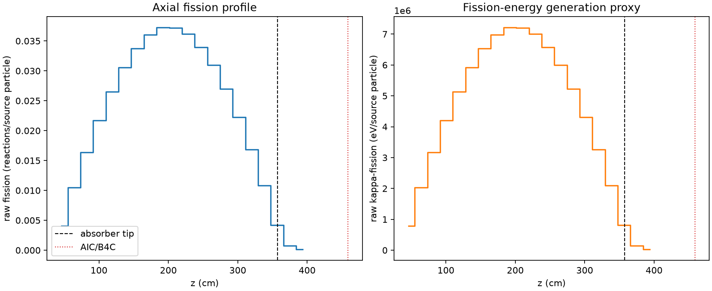
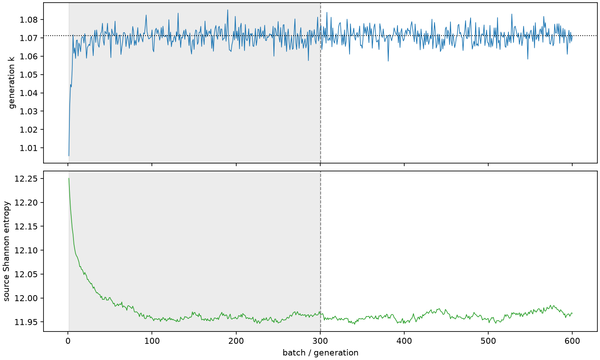

| field | value |
|---|---|
| experiment | V2-ADAPTIVE_01-0026 |
| k | 1.0711202654038576 |
| MC standard error | 0.0001641655139370139 |
| seconds | 1046.7221102600452 |
| acceptance | not_assessed |
| convergence | review_required |
Completed is output integrity only; physical and statistical review required. Zero tallies do not prove zero production or zero uncertainty.
| diagnostic | value |
|---|---|
| geometric fuel voxels | 5280 |
| zero fission tally voxels | 0 |
| low signal fuel voxels | 0 |
| low signal fission share | 0.0 |
| low signal kappa share | 0.0 |
| important fission share | 0.9500922125558775 |
| previous filter included | 5280 |
| duration estimate s | 1562.5173488400023 |
| actual minus estimate s | -515.7952385799572 |
| fission relative MC error | statistics |
|---|---|
| all_geometric_fuel | {"voxels": 5280, "positive_mean_voxels": 5280, "zero_mean_voxels": 0, "undefined_relative_error_voxels": 0, "median": 0.009853979593793465, "p95": 0.06955670766470269, "maximum": 0.17305696535233697} |
| low_signal | {"voxels": 0, "positive_mean_voxels": 0, "zero_mean_voxels": 0, "undefined_relative_error_voxels": 0, "median": null, "p95": null, "maximum": null} |
| important_95pct | {"voxels": 3904, "positive_mean_voxels": 3904, "zero_mean_voxels": 0, "undefined_relative_error_voxels": 0, "median": 0.00892876581885128, "p95": 0.013571474051333533, "maximum": 0.016275446819784375} |
| outside_previous_filter | {"voxels": 0, "positive_mean_voxels": 0, "zero_mean_voxels": 0, "undefined_relative_error_voxels": 0, "median": null, "p95": null, "maximum": null} |
| kappa_fission relative MC error | statistics |
|---|---|
| all_geometric_fuel | {"voxels": 5280, "positive_mean_voxels": 5280, "zero_mean_voxels": 0, "undefined_relative_error_voxels": 0, "median": 0.009841074996881327, "p95": 0.06945054758723831, "maximum": 0.17273524450427324} |
| low_signal | {"voxels": 0, "positive_mean_voxels": 0, "zero_mean_voxels": 0, "undefined_relative_error_voxels": 0, "median": null, "p95": null, "maximum": null} |
| important_95pct | {"voxels": 3904, "positive_mean_voxels": 3904, "zero_mean_voxels": 0, "undefined_relative_error_voxels": 0, "median": 0.008918185751832935, "p95": 0.013556331221733244, "maximum": 0.01625527905375034} |
| outside_previous_filter | {"voxels": 0, "positive_mean_voxels": 0, "zero_mean_voxels": 0, "undefined_relative_error_voxels": 0, "median": null, "p95": null, "maximum": null} |
| axial bin | fission share | kappa-fission share |
|---|---|---|
| 1 | 0.009350902636802636 | 0.009351371074186737 |
| 2 | 0.024005225566800212 | 0.02400526190304543 |
| 3 | 0.037472780004051624 | 0.03747272276175717 |
| 4 | 0.04968757057109442 | 0.04968723817536568 |
| 5 | 0.06061527729275737 | 0.060615241110830526 |
| 6 | 0.06994221619038465 | 0.06994195052896268 |
| 7 | 0.07724993718619788 | 0.0772497543887116 |
| 8 | 0.08244696930499504 | 0.08244660061575057 |
| 9 | 0.08518403211715224 | 0.08518393838537808 |
| 10 | 0.08516346662035247 | 0.08516328352976557 |
| 11 | 0.08270081532470347 | 0.08270080856962576 |
| 12 | 0.07767486621345908 | 0.0776749466048983 |
| 13 | 0.07079787903442913 | 0.07079752167676302 |
| 14 | 0.06179673387351119 | 0.06179635347746302 |
| 15 | 0.050954030542622396 | 0.0509539226479557 |
| 16 | 0.03852962437525652 | 0.03852951122387308 |
| 17 | 0.024795880872152086 | 0.02479587029566975 |
| 18 | 0.009535362900389026 | 0.009536370507034472 |
| 19 | 0.0017574147369071743 | 0.0017581625312775217 |
| 20 | 0.0003390146359813371 | 0.00033916999168541885 |
Histories include the inactive-to-active transition at batch 300. kappa-fission approximates fission energy production, not total heat deposition.

